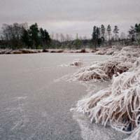
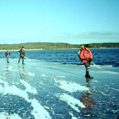

|
Under säsongen kunde vi utlyste vi turer under 28 dagar. På dessa dagar hann vi med att åka 43 turer. 14 av våra ledare ledde turer med totalt 381 deltagare. Vi åkte ungefär 125 mil under säsongen på de 34 sjöar som vi besökte.
Turer med datum i fetstil är utlysta turer i SIK’s regi. Privata turer medtagna som information om att det även åks en hel del utanför de utlysta turerna. I turbeskrivningarna har texten från ledarens mailade rapport använts i sin
helhet eller förkortats.
November
Torsdag 16:e
Ledare och isspanare träffas på Dalby Gästgivaregård och planerar säsongen. December
Fredag 1:a
Isnytt börjar rapportera att det inte finns någon is.
Fredag 8:e
Isnytt kan rapportera att det finns is i västra Jämtland och utanför S:t Petersburg. Men det har vi ingen glädje av.
Söndag 17:e
Tuffa SIK-medlemmar badar i havet vid Ribbersborgs kallbadhus.
Tisdag 19:e
Temperaturen ligger under 0º för första gången. Vintern börjar och under resten av
veckan i huvudsak minusgrader. På telefonsvararen kommer det in rapporter om att dammar och sjöar skinnar sig.
Torsdag 21:e
Premiären på naturis för denna säsong. Lars åkte en timme på "Hemliga
Sjön" och det knakade och brakade rejält. Sjön, som ligger mellan Vissmarlöv och
Eksholm, är flikig och endast ca 700 m i omkrets. "Det var härligt att vara igång
igen. Åkte i den nedåtgående solens sken. Träden var vita av rimfrost och hästarna
gnäggade vilt och stirrade förskrämda på inkräktaren i deras revir."
Att åka ensam på så här tunn is ensam skall man inte göra. Varning Lasse!
Fredag 22:a
Göte Larsson har gått påsom israpportör och blev den förste som plurrade dock bara till midjan, när isen provades på Krankesjön. Han var inte ensam och bottnade. Rapporter inkommer om isar under tillväxt på flera sjöar.
Juldagen 25:e
6 åkare från SIK med 3 gäster kör till Sjöarna vid Perstorp. Ledare Göte Larsson. Isen är tunn och bara delar av Store damm kan befaras. Hela Fåglasjön befors på is
tjockare än 4 cm. Största noterade tjocklek 6 cm. Bra åkyta ingen snö men lite rimfrost på mindre ytor. En plurrning på "stigen" genom träsket på vägen ut på Store damm. Att det var premiärtur kan möjligen förklara att tre åkare ej hade fullständig utrustning. (Saknades 2 par isdubbar och 1 pik) Annandag jul 26:e
Dagens organiserade tur med ledare Göte Larsson lockade 13 fullt utrustade medlemmar, som
njöt av sol och is med lite spänning i. Vi körde runt nästan hela Store damm förutom
ett mindre nylagt parti i dess södra del, samt hela Fåglasjön. En alltigenom lyckad
dag.
Medlemmar gjorde privatturer på Krankesjön och Fjällfotasjön.
En medlem på Tämnaren norr Uppsala.
Fredag 29:e
Sven Karlsson ber om sällskap till sjöarna vid Perstorp och får med sig Göte Larsson. En dag med snöslask på isen. Medlemmar har seglat på Krankesjön. DM på denna sjö inställt.
Lördag 30:e
Dagens chanstur till Fjällfotasjön med ledare Lars Carlstedt lockade 6 entusiaster.
Efter lite problem med att komma ut på isen gav vi oss iväg på led med stora avstånd. Isen höll 5-7 cm. Ytan var hård men värmen både upp- och nerifrån hade gjort kvaliteten något svampig. Våriskaraktär kan man kalla det. På vissa ställen fräste och sprakade det väl mycket så det var bara att vända och ta en annan väg.
Snön som fallit de senast dagarna hade stöpt ner men nattkylan hade gjort att den skarat sig. Skridskorna styrde ibland åt ett annat håll än vad ägaren kanske hade tänkt sig. Bra träning inför Vasaloppet sa Stefan. Inte roligt alls sa Mariet som inte tänker åka Vasaloppet. Rasten avnjöts på en holme. Detta var klubbens fjärde utlysta tur denna säsong. Troligen var vi i Skåne de enda
långfärds-skridskoåkare som var igång idag. Sverige är i övrigt just nu igensnöat. Några SIK-are åkte privattur på Pertorps Dammar.
Januari
Måndag 1:a (Nyårsdagen)
Vid samlingsplatsen Lunds södra pendlarparkering/ICA Express fanns ingen åkare kl 10.02 två minuter efter utsatt samlingstid. Halvmulet några minusgrader och svag nordostlig vind. Som israpportör undrade man då om alla nyårsmällarna och champagneskålar helt hade sänkt SIKs medlemmar i ett bedövat sängläge. Jag for ensam till Krankesjöns badplats på norra stranden och fann till min glädje, att vi blev sju åkare som med viss försiktighet for runt ett varv på Krankesjöns fina och ibland klirrande is. Fågelvakarna mitt på sjön var fortfarande öppna. Vi kunde fara runt hela sjön och undvek områdena vid utloppen där det var öppet vatten. Efter ett varv anslöt två åkare, som vaknat upp. Vi körde ytterligare ett varv med mig (Stefan) som ledare. På det andra varvet skulle vi passera en råk i nordöstra delen, där en åkare trampade
igenom med en fot men fick upp den och gled över utan att knäcka isen och slapp bada.. Strax efter oss kom det gamla paret, se nedan, och höll på att intet ont anande fara rätt in mot den svaga råken, där vår medlem nästan vit i ansiktet på väg ner igenom
isen. Vi hejdade och varnade det gamla paret för att åka utan säkerhetsutrustning än
en gång, se nedan.
Fikarast på rastplatsen i östra änden av sjön, där det finns utställda bänkar med bord. Det tredje varvet tog Alf Porenius över som ledare, eftersom jag ville pröva mitt skridskosegel. Fem isseglare hade då kommit ut och hade lätt vind för lite träningssegling. Vädret var halvmulet i början och mot ettiden bröt solen igenom. Efter hand kom många åkare med bandy eller hockeyrör ut på isen.
På första varvet mötte vi vid östra stranden ett äldre par, dåligt utrustade långfärdsåkare utan dubbar och pik. De for omkring planlöst och berättade att de varit på sjön även dagen före. Vi framhöll farorna att göra det. Sedan följde de sakta efter i våra spår. De lovade skaffa
säkerhetsutrustning och den gamla damen ville bli medlem i SIK. En fin början på det nya året.
Tisdag 2:a
Jörgen Åstrand seglade i snöslasket på Krankesjön.
Lördag 6:e (Trettondagen)
Dagens tur för entusiaster med ledare Lars Carlstedt lockade 5 deltagare som hade en underbar skridskodag trots regnet. Den utlysta förmiddagsturen förlängdes på allmän begäran till en heldag. Efter Dagstorpssjön och Vaxsjön ägnade vi oss åt nyheterna Kvesarumssjön och Bosarpasjön vid Södra Rörum. Trots att det varit varm en vecka och regnet öst ner finns åkbar is kvar. Sjöarna hade 5-7 cm is med hård yta. Vissa partier var svagare och där knastrade det som knäckebröd. För alla sjöar gäller att de är landlösa och kräver bryggor för att ta sig ut på isen. Alla bryggor kring Bosarpasjön var uppdragna på land. Vi kämpade förgäves med gamla båtar, bryggsektioner och vindsurfingbrädor för att försöka ta oss över de landlösa partierna. Sjön bjöd motstånd och återstår därför att erövra.
Vid Kvesarumssjön ligger ett romatiskt slott med tinnar och torn en sevärdhet bara det. Söndag 7:e
Dagens tur samlade 9 deltagare, som åkte till Kvesarumssjön i det fagra landskapet vid
södra Rörum. Isen hade försvagats sedan gårdagens tur och medlemmarna uppmanades av
ledaren Lena Mared att hålla avstånden. Uppmaningen var nödvändig dels för att
fördela den gemensamma vikten över så stor yta som möjligt. Efter ett par varv på en
hård och slät yta och lunch nedanför Kvesarums romantiska slott åkte vi över till
Sjöbergasjön. Här skedde dagens enda plurrning i samband att vi letade efter ett
säkert ställe att ta oss ut på den landlösa isen. Plurrningen var unik såtillvida att
den drabbade blötte ner hela högersidan från topp till tå. Vänstersidan var snustorr.
Lördag 13:e

25 pers åkte på Perstorps dammar, det var en långsam grupp (ledare Frans Liliedahl) och en grupp för medelgoda åkare (ledare Jan Rehnö). Vi åkte på stora delar av Store damm, 2 varv på Fåglasjön, nästan hela Svenstorpssjön och lite på Håkanstorps mölledamm. Den gamla stöpisen var stark, 6-10
cm, aningen knottrig. Nyisen var bara ca 3 cm och det var den som förhindrade oss från att åka hela varv runt sjöarna. På förmiddagen sken solen och alla var glada, på eftermiddagen var det dimma och alla var fortfarande glada. En lyckad dag.
Söndag 14:e
Lätt tur med ledare Jan Rehnö. Färdlängd: ca 30 km. antal deltagare 15.
Från p-platsen västerut i avsikt att runda Store damm, men precis som i dagen innan var isen för tunn vid norra udden. Samma väg tillbaks för att följa södra stranden mot övergången till östra delen av Store damm. Strax före övergången var ett svagt parti, som med försiktighet och stort avstånd mellan åkarna passerades. Östra delen hade tjockare is med undantag av ett område närmast utloppet.
Fåglasjö hade överlag bättre is och varvades några gånger. Återfärd till startplatsen i motsatt riktning med en avslutande tur upp till det svaga partiet på den västra delen av Store Damm. Isförhållanden
Bra lättåkt is, den nylagda isen var dock för tunn.
Väderförhållanden
Lätt dimma på förmiddagen, som på eftermiddagen avlöstes av sol. Ingen vind. Erfarenheter
Alla åkare var nöjda och de som inte tidigare åkt på sjösystemet var imponerade. Gruppen var väl samlad under åkningen, bra avstånd hölls mellan åkarna på svaga partier.
Turen för nybörjare samlade fyra deltagare som fick en mycket bra dag under Gunilla Bergs och Catharinas ledning. Arrangörerna hade hoppats på Krankesjön för att få fler deltagare men den var inte att rekommendera ens för de kunnigaste. Fåglasjön visste vi sen gårdagen vad den gick för och fick därför tjänstgöra som lektionssal för premiären på klubbens nya satsning.
En lagom blandning av teori och praktik och läraktiga
elever gjorde att de framåt eftermiddagen kunde ansluta till mina (Lars) åtta som valde
den senare turen denna dag. Turen var utlyst som Lätt men deltagarna var duktiga och
pressade mig till ett allt högre tempo.
Vi startade skridskoåkningen i en sagoskimrande dimma. Under dagen bröt solen fram så varv nummer två på Fåglasjön och Store Damm gjorde att vi upplevde sjöarna som helt nya. Temperaturen var minus 2 och vinden svag. Då och då mötte vi Jan Rehnös stora grupp med femton deltagare. Fåglasjön hade stabil is med bra yta. Store Damm hade ännu bättre yta (5+) men var svag i nordöstra och norra delen.
Vissa passager var direkt spännande.
Tisdag 16:e
Krankesjön kommer så sakteliga. Jörgen har åkt men det knakar och brakar fortfarande. Eric Lillienau och Joakim Lindhe åkte där idag. Dom åkte ett motsolsvarv från norra startplatsen. Det gick att ta sig till östra fågeltornet sen blev det mycket svagt.
Onsdag 17:e
Några Sikare gör en mittiveckan tur på Sjösystemet vid Perstorp.
Lördag 20:e
Tre turer var utlysta alla till Immeln. Alla startades från Mjönäs badplats. Jämn och hård is med lite pudersnö. Vädret var disigt med obetydlig vind. Flera andra stora och mindre grupper njöt av den stora sjön med några spännande partier i några sund. Mats Jansson genomförde en krävande tur på 5 deltagare rund norra Immeln som återvände till Mjönäs badplats ganska så svettiga efter 55 km i bra tempo. Bengt Ekwall ledde en grupp vana åkare på 9 deltagare (12 från början men 3 valde att hoppa av) som åkte 48 km längs den östra stranden in och ut i alla vikar upp till Nytteboda brygga och sedan vidare till upp till Mossaviken och när isen tunnade ut vände vi vid i höjd med Ekön och sedan tillbaka samma väg men vi genade lite mera i vikarna.
Alf Porenius ledde en grupp vana åkare som startade en timme senare som fick 13 deltagare (3 valde att hoppa av) som åkte 40 km.
Söndag 21:a
4 vana åkare ledda av Mats Jansson körde till Åsnen utlyst som krävande tur. Sjön Åsnen ligger söder om Växjö och har fina åkområden när den väl lägger sig. Den har många vikar och flikar och öar och dessutom stora fjärdar. Vi åkte över Frankasjön längs västra stranden av Horgefjorden. Kort landpromenad över den gamla järnvägsbanken vidare norrut mellan Bergön och Norra Aspön med sikte på sundet till Åkavik. Promenad över vägbanken sneddade över Åkavik och följer Kläcklingens
västra strand upp till sundet i nordost. Passage över vägbanken. Längs den västra stranden tills sjön tog slut dvs strax norr om Kalvsvik. Från Kalvsvik söder ut ungefär till Rössås där utloppen från ån försvagade isen. Sneddade över fjärden i
riktning mot Kättudden och följde Kläcklingens östra strand därefter rundades Borgön, ett snabbt skutt över en vägbank och sedan norr ut för att promenera över ett smalt näs på Sirkön i höjd med Möjavik. Från Möjavik i riktning mot norra änden av
Södra Aspö där efter mot norra udden på L.Lövö. Sedan följde vi våra spår från morgonen till baka till bilarna.
Mestadels ordentligt tjock is men lite sträv av fastfrusen snö. "Stor Åsnen" kunde inte befaras då isen där inte var mer än några dagar gammal och var i tunnaste laget. Strax efter första rasten kom vi runt en udde och där satt 3-4 Havsörnar på isen. De flög upp när de fick syn på oss och ur träden flög ytterliggare några örnar i väg. På tillbaka vägen såg vi ytterligare örnar och dessutom en räv som raskade över isen.
En lantbrukare på isen berättade att när han skulle köra traktor till någon ö provade han isen genom att köra ner hela motorsågssvärde i isen och kom det inget vatten upp höll isen för traktorn. Men nu var det många år sedan det var sådana förhållande.
Jan Rehnö leder 16 vana åkare på Immeln. Färdlängd: c:a 45 km
Färdväg
Från S Mjönäs längs stranden in i alla vikar hela vägen upp till vindskyddet på Lissudden, därifrån västra sidan av Högön, som inte kunde passeras i sundet mellan ön och fastlandet. Längs Högön och vidare upp längs västra sidan av Ekön, som rundades och ner längs Kassudden upp längs östra stranden förbi Brotorpet upp till Nytteboda brygga. I sjöboden strax söder bryggan serverade en initiativrik yngling varm korv med bröd och varm dryck i ett nyöppnat café "Iscafet". Efter matpaus vidare mot Mossavik, som åktes ända till norra delen. Tillbaks och vidare mot Ekön,Högön, Lissudden och samma väg tillbaks till badplatsen S Mjönäs.
Isförhållanden:
c:a 6-7 cm tjock, på vissa ställen tunnare knakande. Isen var täckt med några mm snö. Många hade åkt före oss, bl.a. KRIS, som lämnat tydliga och
användbara spår efter sig. Väderförhållanden
Nästan vindstilla, mulet lite kornsnö på förmiddagen och uppehåll med bättre sikt på eftermiddagen. Temperatur kring 0 , något över på eftermiddagen.
Erfarenheter
Några deltagare hade det jobbigt med farten för "vana åkare" varför farten fick dämpas något. Det hade alltså varit bra med två ledare för uppdelning i två grupper. Deltagarna utryckte i alla fall sin uppskattning av dagen efter åkningens slut.
Lördag 27:e
Lita inte på termometern. Det går alltid att åka. Skriver dagens ledare Lars Carlstedt som mot alla odds lyckades hitta is: Dagens "omöjliga" tur lockade sex deltagare som fick en oförglömlig dag i Göingebygden. Isytan var hård och torr trots en vecka som började med snö som övergick i plus 4-5 graders värme. Isen hade viss våriskaraktär och suckade och fräste på vissa sträckor.
Vi startade vid trolska Stora Kroksjöns norra ände. Efter två verkligen krokiga varv
förflyttade vi oss till badplatsen vid Rolstorpssjöns södra ände. Nils Olof Axelsson - NOA populärt kallad - hade tipsat oss om denna högt och avsides belägna sjö. Efter ett
varv på den gick vi 300 m över till Vesslarpssjön en annan pärla i den särpräglade Göingebygden.
Dagens tur var utlyst som Lätt men deltagarna var rutinerade och tålde högre fart. Vi
fick 35 km i benen. Alla mer än nöjda trots de tolv milen till arenorna hälsar dagens ledare Lars R Carlstedt.
Söndag 28:e
Efter en veckas mildväder är det nu långt till åkbar is och därför utlyses en chanstur för vana åkare till Femlingen en trevlig, ganska stor och flikig sjö som erbjuder en hel dags åkning om alla vikar körs. Chansturen blev en av årets höjdpunkter, Mycket fin is med bara en millimeter vatten. Bärigheten var bra med undantag för några passager över sund. Jan Renö ledde gruppen säkert och djärvt.
Detta är ett exempel på färdrapport inspirerad av SSSKs mall
Åkgrupp:
Vana åkare
Ledare: Jan Rehnö
Färdlängd : c:a 37 km
Antal deltagare: 9
Samlingsplats: Lunds s pendlarparkering
Samlingstid: 09.00
Färdmedel: 2 bilar
Färdstartplats: Femlingen NO delen, båtplatsen V Vashult 4 km N Häradsbäck.
Färdstarttid: 11.10
Målplats: = Färdstartplats
Tid i mål: 15.10
Olycksfall/plurrningar: Inga
Färdväg
Följde sjöns strand moturs in i varje vik ända upp i norra delen därefter SV längs västra stranden. Åkte över mot udden N Uthövdan och följde dess V strand till sjöns SV del vid utloppet. Tillbaks samma väg längs halvön, rundade den och åkte söderut förbi Löjö. Tog av skridskorna och gick över den smala landtungan som förbinder Löjö med fastlande och fortsatte mot den skärgårdslika delen i SÖ delen. In och ut i alla vikar och sedan upp mot båtplatsen där vi startade.
Isförhållanden
Mestadels gammal is med partier av tunnare nyis. Hård yta med vatten, som gjorde isen lättåkt. Vissa partier med tunnare is knastrade och på några ställen öppet vatten.
Erfarenheter
Det gråa vädret med lätt duggregn och den relativt långa bilresan avskräckte
sannolikt en del åkare, men vi som var med njöt. Farten var normal för vana åkare.
Sammanhållningen i gruppen var god. Alla nöjda och tyckte att åkningen var väl värd
bilresan. Väderförhållanden
+2, svag NO vind lätt duggregn, som upphörde
Utflykt med iskunskapskursen med magister Mats Jansson
Vi var i Nytebodaviken. Isen visade sig vara ganska intressant till och med mycket intressant. Som väntat kom vi till den södra udden som man måste runda för att komma in i Mossaviken. Där var det öppet och vi kunde studera flera gränser i den uttunnande isen. Vi prövade även på att åka på den tunna sprakande isen.
På vägen dit hade vi övat på livlinekast stående och liggande. Vi vände och prövade på lite motvindsåkning. Fika gjorde vi vid skogshuggarboden på den västra stranden. Isen var av våriskaraktär och det gick att slå loss stora bitar ur ytan. Vi såg även isens pelarstruktur, skönt att teori och verklighet stämmer.
Vi fortsatte sedan till Stora Kroksjön. Där var våriskaraktären tydligare och det sprakade och suckade en hel del i isen. Mycket bra att förevisa. Vi vände efter ca halva västra stranden. Syftet var ju inte att bada utan att hålla sig ovan på isen. Vi avslutade med att dra oss fram med dubbarna på isen. Då isen var något fuktig så blev kläderna våta. Även här stämde teorin med verkligheten, många korta tag var effektivare än få och långa tag med dubbarna.
En sammanfattning mitt i säsongen kom från Lasse:
p>Du SIKare som tycker att vi inte haft någon vinter. Lukta på denna uppräkning per dagens datum 2001-01-29. Den innehåller sjöar som inrapporterats på "Intalaren" denna säsong.
Dessa sjöar har vi hittills befarit under säsongens utlysta turer/seglingar:
Fjällfotasjön, Krankesjön, Vaxsjön, Dagstorpssjön, Kvesarumssjön, Sjöbergasjön, Store Damm, Fåglasjön, Håkanstorpssjön, Svenstorpssjön, Immeln, Stora Kroksjön,Rolstorpssjön, Vesslarpssjön, Möckeln, Femlingen och Åsnen
Dessutom har till Intalaren rapporterats privatturer/isspaning på följande sjöar i vårt åkområde:
Hemliga Sjön, Häckebergasjön, Västra Ringsjön, Sätoftasjön (Östra Ringsjön), Aralövssjön, Lursjön, Västersjön, Hjälmsjön, Värsjön, Fedingen, Köphultasjön, Hannabadssjön
På Intalaren inrapporterade privatturer utanför vårt
åkområde:
Dammtorpssjön (Stockholm), Söderbysjön (Stockholm), Hemliga Sjön (Kungsängen), Lillsjön (Kungsängen), Översjön (Järfälla), Tämnaren (Uppland)
Allt detta och säsongen har bara börjat! Vi SIKare är i sanning ett flitigt släkte. Februari
Lördag 3:e

Dagens tur var p.g.a. risk för packad snö utlyst för Vana åkare. Den lockade 22 deltagare, som delades upp i två grupper. Vi avverkade fyra sjöar norr om Hässleholm och luktade på västra Ringsjön på vägen hem. Det blev en omväxlande tur i strålande sol och bitsk nordostan. Stadiga isar avlöstes av svaga. Ja så svaga att en deltagare
som åkte före ledaren fick sig ett ordentligt dopp. Snön var bitvis packad av vinden
och gjorde åkningen pulshöjande. Andra delar smöråkte vi i lös snö eller på
renblåsta ytor. Distans35 km. Ledare Stefan Matsson och Lars Carlstedt.
Tydingen var stabil men hade hårt packad snö i sin
västra del. Lursjön hade två cm lös snö. Den gick att ta sig runt. Stor försiktighet krävdes vid Näset och utanför Skärseröd. Det finns numera en vak där! Sjön gick öppen i mitten. Ottarpasjön var stark. Ballingslövssjön gick delvis öppen och
därifrån lyfte 15 sångsvanar över våra huvuden. Västra Ringsjön bar längs den västra stranden men var svag längre ut.
Söndag 4:e
Isnytt lockade ut ett trettiotal gamla och nya medlemmar till Lunds södra pendlarparkering som sen åkte i en lång karavan mot Krankesjön. Men vad! I Lund var det snöfritt och vid Revinge 20 cm. Vi vågade inte ta oss ner till sjön för risken att köra fast på den oplogade vägen. Anders Westman, som från datorn hemma och Vägverkets hemsida kunde berätta att Mellanskåne var snöfritt inspirerade oss att åka till Sätoftasjöns svarta lätt pudrade salsgolv. Vägen dit bjöd på snöglopp men vid sjön
bröt solen fram över de 25 som följde med. Ute på östra Ringsjön lagom till lunch utnyttjade ledaren Lena Mared sitt privilegium att få plurra. Det var grunt men ändå vått.
Tillbaka till bilarna ville ingen åka hem. Vi sökte oss utåt varvid undertecknad som hade torrt ombyte tog täten. Isen var i tunnaste laget och vi åkte i ett långt glest led. Vid ett utlopp åkte två deltagare i slutet av kön rätt fram istället för att svänga som vi andra gjorde. Vi fick en pedagogisk dubbel-plurrning. Väl iland utbröt en intensiv diskussion bland alla deltagare om vikten av lätt tillgänglig kastlina med karbinhake vid axeln och fullständigt ombyte i vilket inräknas handduk. Det är nämligen svårt att byta när man är våt. Pikar, stavar mössor blev kvar då det var omöjligt att nå dem. Åse ringde polisen i Höör och informerade så att allmänheten om några dagar inte tror att plurrarna blev kvar under isen. Distans 12 km.
Några medlemmar bl a sagesmannen Erik Rahlén som tog sig direkt till Krankesjön lyckades åka i djupsnön bort mot det östra fågeltornet. Isen var fortfarande svag i nordost varför de vände och kollade Fjällfotasjön. Här var det "endast" 10cm snö.
Lördag 10:e
Tur på den trevliga och högt belägna sjön Femlingen. 21 medlemmar i tre grupper fick uppleva en fantastisk dag med drömis, vindstilla och strålande sol. Några medlemmar var helt lyriska!
Söndag 11:e
På morgonen låg det några cm snö på marken och vinden tjöt. Finn Sperling och Lars Carlstedt infann sig vid Lunds södra i god tid för att ta emot anstormningen av åksugna medlemmar. Det blev totalt fyra stycken som var helt överens om att ge sig iväg. Allra helst som vi på Blekingesvararen hörde att Lars Thulin en halvtimme tidigare hade inställt sin tur med hänvisning till det snöoväder som skulle komma västerifrån. Vi startade vid Gamla Bo och åkte åt nordväst på Västra Ringsjöns västra strand. Efter några kilometer blev isen tunnare än snöskiktets 3-4 cm. Vi vände och åkte till Dagstorpssjön. Vägen dit var en upplevelse bara den. Slingrande snötäckta vägar utan några hjulspår genom vackra bokskogar. Vi åkte två varv i föga hindrande snötäcke.
Det var utlyst en lätt tur och en tur för vana åkare. Vi genomförde båda. Den första med mig som ledare och Finn som kökarl. Den andra med Finn som ledare och med mig som kökarl. De två medlemmarna åkte tryggt i mitten. Dagen gav drygt 1½ mil i kropp och inte minst själ.
Fredag 16:e
SIK gör gemensam tur med KRIS till Möckeln och får en fin dag med solsken och hård blank is.
Lördag 17:e
Mats Jansson utlyser tur till Möckeln med start redan kl 07.30 och 8 morgonpigga män och
en kvinna anslöt. Vilket visade sig vara klokt eftersom vi kunde åka några timmar innan vinden ökade och turen blev lång. Så gott som hela sjön befors och dessutom även den närliggande Kalvsjön. Isen hade en jämn och hård yta. Nattemperaturen hade varit så låg som -6°C. Under dagen gick den upp till +2°C. Många råkar hade uppståt men kunde passeras utan större besvär. Isen visar våriskaraktär. Sju timmar tillbringades på isen. Stenbrohult kyrka är en bra startplats har t.o.m. uppvärmd wc. Gårt med andakt över norra delen av kyrkogården till bilarna.
Söndag.18:e
Utlyst lätt tur lockade endast 5 deltagare. Planen var att åka på småsjöarna norr om Immeln till dessa mjuknade i det varma solskensvädret. Men isen mjuknade inte, den hårda vinden torkade och kylde isen och Nytebodaviken, Mossaviken, St.Kroksjön Braxnagylet,
Vielången, Strönhultsjön. Rolstorpsjön, Vässlarpsjön och Gårdsjön kunde befaras en heldag på bra i med +2º på morgonen och +7ºC på eftermiddagen. Ledare Mats Jansson kunde känna sig nöjd med en spännande och innehållsrik och oväntad bra dag med säsongens rekord i antal sjöar på en dag.
Vikingarännet
Vikingarännet var riktigt tungt år. Jag (Stefan) åkte i rulle upp till Sigtuna i hård motvind o på dålig is, ca 25 km men det kändes som det dubbla - då var jag trött. Efter Sigtuna spreds fältet ut så jag var ensam resten av loppet och hade ingen att åka med. Det var ett par långa motvindar på slutet och de sista 7 km stod jag fullkomligt still. Men jag kom i mål. > Det var lite otur för på lördagen var isarna perfekta, snön kom under en halvtimme på lördagskvällen. Jag tyckte nästan att den dåliga isen
med ibland fastfrusen snö var värre än vinden.
Vikingarännet i söndags blev tufft. 1300 åkare bröt. Dock inte SIKs sju för mig kända deltagare. Snabbast var Frans Liliedahl som åkte på 4 tim och 55 minuter. Åse var som var en av de 233 kvinnor som genomförde åkte på bara en timme längre tid än Frans. 76 km.
Lördag 24:e
30 åkare som hade en fantastisk dag i Göingebygden. Det var utlovat sol, slät och stark is på vildmarkssjöar väster om Immeln och det stämde. Med två ledare kunde både tur för vana och mindre vana genomföras. Den mycket kalla natten (-17°C) hade gjort att tidigare öppet vatten återfrusit och vi fick årets sista chans att åka på knakande svart nyis. Efter fem intensiva timmar på Rolstorpssjön, Vesslarpssjön och Farlången åkte vi nöjda de tio milen hem igen.
Söndag 25:e
Gårdagens Isnytt lockade 20 åkare. Elva åkte till Örsjön nordväst om Osby och nio till Krankesjön. Under förmiddagen dök ytterligare SIKare upp på Krankesjön och åkte motsols bort till det östra fågeltornet innan den svaga isen tvingade alla att vända tillbaka i samma spår. Örsjöåkarna fick en solig och fin dag med Stefan Holmström, som hastig hoppade in som sjukvikarierande ledare. Isen var slät och täckt av ca två cm torr inte hindrande snö. Den dolde dock några lömska partier som ledde till ett halvt dopp.
Mars
Lördag 3:e
Privattur på Krankesjön med sju deltagare. Inga organiserade turer p.g.a. snötäckta eller svaga isar. Första gången på mycket länge!. Vi blev sju SIKare som inte ville bryta kedjan utan tog oss till Krankesjön inspirerade av gårdagens isspanare Per Nilsson och Lars-Olof Karlsson. Vi åkte runt hela sjön utom längst i nordväst där det gick helt öppet. Det var svagt i nordost men väl passerbart med omdöme. Isen var lätt knottrig och täckt av en cm lätt snö som gav åkningen en extra dimension i den
flödande solen. Två gånger med- och motsols till öppet vatten gav oss 30 km i benen. Vi träffade ett annat gäng varav tre värvades till SIK. Dom var nerflyttade från mellansverige och föll oss nästan om halsen när vi berättade om SIKs existens.
Söndag 4:e
23 medlemmar mötte upp i solskenet och kunde åka för första gången denna säsong skrinna på Snoghelmsjön med tillräckligt tjock is utom vid en udde på östra sidan där isen endast 38 mm tjock fick gruppen att vända och köra tillbaka. Detta gav två varv så när som på 50 m. Därefter fortsatte de flesta till den lilla Sövdeborgssjön, som vi hade fått tillstånd att befara av "slottsherren". Sedan forsatte några för en tur på Kyrkviken i Sövdesjön, men öppet vatten stoppade oss. Tillsammans blev det i alla fall 28 km. Denna dag gjordes en enda liten tur på havsis av KRIS resten av
sjöarna var täckta av snö och omöjliggjorde åkning.
Privatturer genomfördes på Börringesjön, Krankesjön, Vombsjön och Fjällfotasjön.
Tisdag 6:e
Medlemmar som kunde prioritera gjorde privattur på Fjällfotasjn, Yddingen, Snogheolmssjön Västra och östra Ringsjön. Jörgen seglade på V.Ringsjön.
Lördag 11:e
Med klubbens första abonnerade buss åkte vi i lördags till Möckeln för att fira
25-årsdagen av klubbens bildande. Vi blev ett trettiotal medlemmar som samlades nedanför vår medlem Torsten Henkes bostad med anor får 1700-talet. Torsten hälsade oss välkomna till Möckelsnäs och berättade om trakten. Vi drog sedan söderut i två grupper. Jan Rehnö ledde tio stycken Vana åkare och Alf Porenius Lätt tur lockade resten.
In i det sista rådde mycket stor osäkerhet om det skulle gå att genomföra
jubileumsturen. Så sent som i onsdags låg det 10 cm snö på Möckeln och vi hade
förberett ett program tillsammans med seglarna på Västra Ringsjön med gemensam pytt
och prisutdelning på golfrestaurangen vid Bosjökloster.
Det skedde emellertid underverk med värme och regn. Snön smälte snabbt ner. Vid lunchtid i fredags var det 3-4 cm snöslask kvar. Under detta var det en hård och stark
is som gjord för en jubileumstur. Värmen gick samtidigt hårt åt Ringsjöns is som vid min kontroll fredag eftermiddag hade fått en mjuk yta där skridskorna skar ner vid nästan varje skär.
Ringsjön var för mjuk. På Möckeln var det snöslask och bussen hade vi avbokat en vecka tidigare. Efter många samtal fick vi fram en buss och satsade djärvt på att
värmen skulle trolla bort snöslasket. på Möckeln. Vi samlades som vanligt vid Lunds södra pendlarparkering klockan åtta. Några kom utklädda. Man såg 20-30-talsklädsel, golfutrusning om isen inte skulle duga, morgonrock eller var det badrock, halmhatt i värmen. Efter avfärd fick vi en jubileumshutt och Stefan Holmström som varit med sedan starten berättade om hur
det började.
På vägen upp regnade det. Vid startplatsen var det uppehåll men kraftig dimma. För orienteringens skull höll vi oss nära land. Vid Ekudden fick vi passera till fots innan vi fortsatte norrut. Stormöckeln som lagt sig sent var så svag att vi vände tillbaka till Möckelsnäs och tog bussen till sjöns nordöstra hörn. Vi följde vikarna in och ut mot väster innan vi per kompass vände
tillbaka till bussen. Isen var täckt av 2-4 cm vatten över den hårda marmorerade ytan. De ej nedstöpta snösträngarna som bromsade framfarten minskade i omfattning under dagens lopp.
Vi avslutade med prisutdelning och en pytt i den vackra
restaurangen på Möckelnäs herrgård. Erik Rahlén anförde frejdiga snappsvisor. Marit Brandwijk blev överlägsen segrare i maskeraden, Per Nilsson och Alf Porenius hade alla rätt i på blindkartan "SIK:s Is" och Lena Perhag kunde vrida mest vatten ur sina stumpor i en skål på restaurangen. Nöjda tog vi bussen hem.
Torsdag 22:e
Dagens tur till Rolstorpsjön och Vesslarpssjön lockade 4 medlemmar som valde bort arbetet denna soliga torsdag. Vi började med att åka västra sidan av Rolstorpsjön gick sedan över till Veslarpssjön utan större problem men isen svag. På Vesslarpsjön åkte vi hela västra sidan och fortsatte sedan på östra sidan till i höjd med ön, följde öns västra sida och vände sedan pga för svag is och sedan samma väg tillbaka.
Vesslarpssjön har idag fått en råk tvärs över hela sjön söder om ön. Tillbaka på Rolstorpsjön körde vi östra sidan och vände när isen blev för svag. Dessa sjöar är nu på gränsen till farbara och kan inte rekommenderas. Sjöarna har fortfarande en bra åkyta men hållfastheten minskar fort efter några timmars solsken vilket vi blev varse när vi en timme senare passerade över is som burit men den här gången brast den. Där fick vi dagens enda plurrning, som avlöpte väl.
Farlången befors endast av Mats som lyckades åka 10 m, men insåg snabbt det hopplösa läget och vände fortfarande torr.
Lördag 24:e
Sven Karlssons tur idag lördag till Bolmen som blev en solskenstur på fin tjock is bättre än väntad. Visserligen många råkar men dessa kunde passeras på land utan större besvär. En plurrning råkade man ut för men den gick bra. 5 medlemmar tog chansen och följde med Sven och efter 8 timmar på isen körde man hemåt. Bra initiativ av Sven. Vi skeptiker som stannade hemma får skylla oss själva för att vi missade denna fina åkdag.
Uppdaterad av Bengt Ekwall 2001-04-18. |